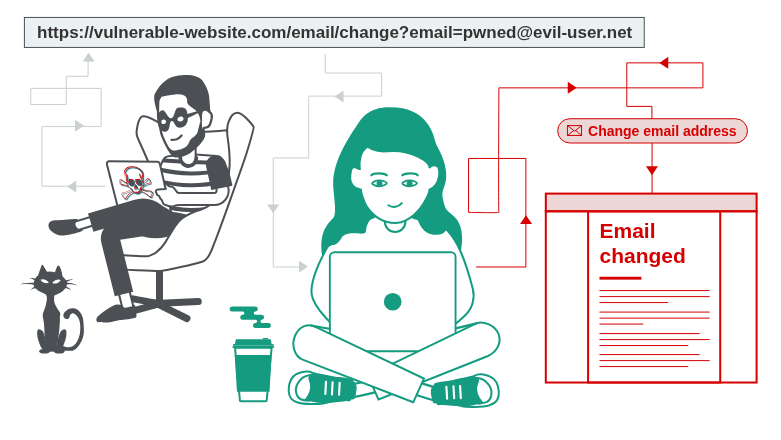
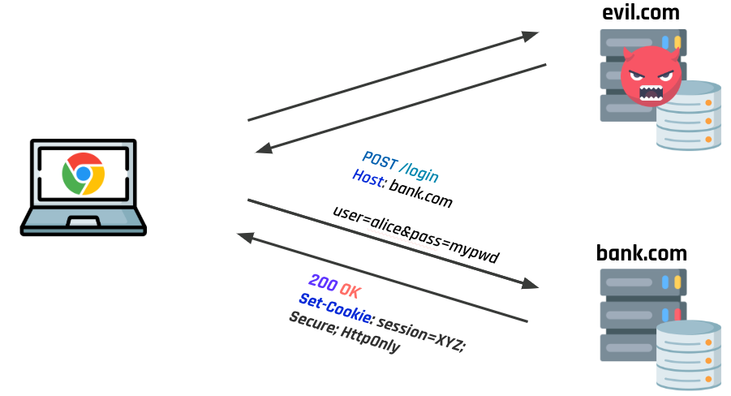
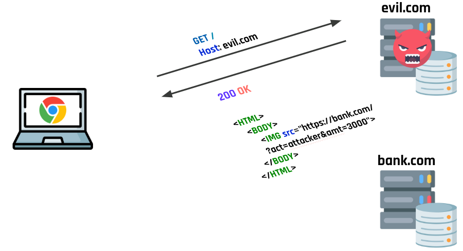
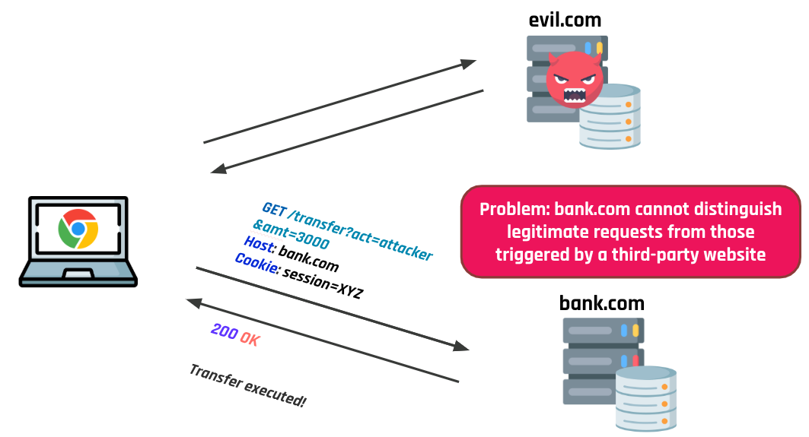

<!-- .slide: data-state="front hide-controls" --> <div id="title">Cross-Site Request Forgery (CSRF)</div> <div id="subtitle">Data Privacy and Security</div> <div id="date">Data Science and Management (DASMA)</div> --- ## What is CSRF? <div class="content-center"> Cross-Site Request Forgery (CSRF) is an attack that forces an authenticated user to execute unwanted actions on a web application. <br/> <div class="fragment" data-fragment-index="0"> CSRF attacks abuse the **automatic attachment of cookies** to requests done by browsers in order to perform arbitrary actions within the session established by the victim with the target website. <br/> </div> <div class="fragment" data-fragment-index="1"> Depending on the nature of the action, the attacker might be able to gain **full control** over the user's account. If the compromised user has a privileged role, the attacker might take full control of the application. </div> </div> --- <div class="content-center"> <p></p> <div class="cell-center"> OWASP > A01:2021 – Broken Access Control > CSRF </div> </div> <div class="footnotes"> <sup>*</sup> Image source: https://portswigger.net/web-security/csrf </div> --- ## Three Conditions for CSRF <div class="content-center"> For a CSRF attack to be possible, **three key conditions** must be in place: <br/> <div class="fragment" data-fragment-index="0"> 1. **A relevant action**: there is an action within the application that the attacker has a reason to induce (e.g., changing a password, transferring funds, modifying permissions). <br/> </div> <div class="fragment" data-fragment-index="1"> 2. **Cookie-based session handling**: the application relies solely on session cookies to identify the user. There is no other mechanism for validating user requests. <br/> </div> <div class="fragment" data-fragment-index="2"> 3. **No unpredictable request parameters**: the requests that perform the action do not contain any parameters whose values the attacker cannot determine or guess. </div> </div> --- ## CSRF in a Nutshell <div class="content-center"> Assume that the victim is **authenticated** on the target website. The attack works as follows: <br/> <div class="fragment" data-fragment-index="0"> 1. The victim visits the **attacker's website**. <br/> </div> <div class="fragment" data-fragment-index="1"> 2. The attacker's page triggers a **request towards the target website**, e.g.: - Forms automatically submitted via JavaScript (for POST requests) - Loading of an image tag (for GET requests) <br/> </div> <div class="fragment" data-fragment-index="2"> 3. The **session cookie is automatically attached** by the browser! <br/> <br/> </div> <div class="fragment" data-fragment-index="3"> <div class="alert alert-warning">The target website <b>cannot distinguish</b> legitimate requests from those triggered by a third-party website.</div> </div> </div> --- ## CSRF Example (1): Victim Logs In <div class="content-center"> Alice authenticates with `bank.com`: <p></p> Alice is now **authenticated** — her browser will attach `session=XYZ` to all subsequent requests to `bank.com`. </div> --- ## CSRF Example (2): The Malicious Page <div class="content-center"> Alice visits `evil.com`, which serves: <p></p> </div> --- ## CSRF Example (3): The Malicious Request <div class="content-center"> <p></p> </div> --- ## CSRF on GET Requests <div class="content-center"> If the sensitive action uses **GET**, the attack is trivial — just embed a URL: <br/> As a hidden image (zero-size): ```html <img src="http://bank.com/transfer?acct=MARIA&amount=100000" width="0" height="0" border="0"> ``` <br/> <div class="fragment" data-fragment-index="0"> Or as a disguised link: ```html <a href="http://bank.com/transfer?acct=MARIA&amount=100000"> View my Pictures! </a> ``` <br/> </div> <div class="fragment" data-fragment-index="1"> <div class="alert alert-note"><b>NOTE</b>: The victim does not see anything suspicious — the browser silently makes the request.</div> </div> </div> --- ## CSRF on POST Requests <div class="content-center"> For **POST** requests, the attacker uses a hidden form with auto-submit: <br/> ```html <html> <body onload="document.forms[0].submit()"> <form action="https://bank.com/transfer" method="POST"> <input type="hidden" name="acct" value="MARIA" /> <input type="hidden" name="amount" value="100000" /> </form> </body> </html> ``` <br/> <div class="fragment" data-fragment-index="0"> When the victim loads this page, the form is **automatically submitted** and the browser attaches the session cookie. </div> </div> --- ## CSRF on Other HTTP Methods (PUT, DELETE) <div class="content-center"> Modern APIs often use PUT or DELETE. An attacker can use JavaScript: <br/> ```html <script> function put() { var x = new XMLHttpRequest(); x.open("PUT", "http://bank.com/transfer", true); x.setRequestHeader("Content-Type", "application/json"); x.send(JSON.stringify({"acct": "BOB", "amount": 100})); } </script> <body onload="put()"> ``` <div class="fragment" data-fragment-index="0"> However, this request will **not** be executed by modern browsers thanks to the **Same-Origin Policy** (SOP). <br/> </div> <div class="fragment" data-fragment-index="1"> <div class="alert alert-warning">Unless the target explicitly allows cross-origin requests via CORS: <code></code><code>http Access-Control-Allow-Origin: * </code><code></code></div> </div> </div> --- ## How to Deliver a CSRF Exploit <div class="content-center"> The delivery mechanisms for CSRF are similar to those for reflected XSS: <br/> <div class="fragment" data-fragment-index="0"> - **Email**: sending an unsolicited email with HTML content containing the exploit <br/> </div> <div class="fragment" data-fragment-index="1"> - **Social media / messaging**: sharing a link that leads to the attacker's page <br/> </div> <div class="fragment" data-fragment-index="2"> - **Planting on popular websites**: e.g., embedding the exploit in a user comment on a popular site and waiting for victims to visit <br/> </div> <div class="fragment" data-fragment-index="3"> - **Self-contained URL**: if the action uses GET, the attacker can directly feed a malicious URL on the vulnerable domain (no external site needed) </div> </div> --- <!-- .slide: data-state="break-blue hide-controls" --> # CSRF Defenses --- ## Common Defenses Against CSRF <div class="content-center"> The most common defenses are: <br/> <div class="fragment" data-fragment-index="0"> 1. **Anti-CSRF Tokens** — a unique, secret, unpredictable value that must be included in each sensitive request <br/> </div> <div class="fragment" data-fragment-index="1"> 2. **SameSite Cookies** — a browser mechanism that restricts when cookies are sent in cross-site requests <br/> </div> <div class="fragment" data-fragment-index="2"> 3. **Referer Validation** — checking the HTTP Referer header to verify the request origin <br/> </div> <div class="fragment" data-fragment-index="3"> 4. **Fetch Metadata** — using browser-provided headers to detect suspicious request contexts </div> </div> --- ## Anti-CSRF Tokens: Synchronizer Token Pattern <div class="content-center"> A secret, randomly generated string is embedded by the web application in all HTML forms as a **hidden input field**: <br/> ```html <form action="/transfer" method="POST"> <input type="hidden" name="csrf_token" value="ak34F9dmAvp"> ... </form> ``` <br/> <div class="fragment" data-fragment-index="0"> Upon form submission, the application checks whether the request contains the expected token. If not, the sensitive operation is **not performed**. </div> <div class="fragment" data-fragment-index="1"> <div class="alert alert-note"><b>NOTE</b>: The attacker cannot read the token from the page (blocked by the Same-Origin Policy) and therefore cannot forge a valid request.</div> </div> </div> --- ## Anti-CSRF Tokens: Cookie-to-Header Token <div class="content-center"> This approach is common for **JavaScript-heavy (SPA)** applications: <br/> <div class="fragment" data-fragment-index="0"> 1. Upon the first visit, the server sets a cookie with a randomly generated token: ```http Set-Cookie: __Host-CSRF_token=aen4GjH9b3s; Path=/; Secure ``` <br/> </div> <div class="fragment" data-fragment-index="1"> 2. JavaScript on the same origin **reads** the cookie value and embeds it into a **custom HTTP header** (e.g., `X-CSRF-Token`). <br/> </div> <div class="fragment" data-fragment-index="2"> 3. The server verifies that the custom header is present and its value **matches** that of the cookie. <br/> </div> <div class="fragment" data-fragment-index="3"> <div class="alert alert-note"><b>NOTE</b>: This works because a cross-origin attacker cannot read cookies from the target domain (Same-Origin Policy) and therefore cannot set the custom header.</div> </div> </div> --- ## Anti-CSRF Tokens: Design Choices <div class="content-center"> Possible design choices for the **generation** of CSRF tokens: <br/> <div class="fragment" data-fragment-index="0"> - **Refreshed at every page load**: limits the timeframe in which a leaked token (e.g., via XSS) is valid <br/> </div> <div class="fragment" data-fragment-index="1"> - **Generated once on session setup**: improves usability — the per-page approach may break when navigating the same site on multiple tabs <br/> </div> <div class="fragment" data-fragment-index="2"> <div class="alert alert-warning">CSRF tokens <b>must be bound to a specific user session</b> — otherwise an attacker may obtain a valid token from his own account and use it in the attack!</div> <br/> </div> <div class="fragment" data-fragment-index="3"> <div class="alert alert-recall">Most modern web frameworks use anti-CSRF tokens <b>by default</b>!</div> </div> </div> --- ## SameSite Cookies <div class="content-center"> The `SameSite` cookie attribute controls when cookies are sent in cross-site requests: <br/> <div class="fragment" data-fragment-index="0"> - **`SameSite=Strict`**: cookie is **never** sent on cross-site requests <br/> </div> <div class="fragment" data-fragment-index="1"> - **`SameSite=Lax`** (default since 2021 in Chrome): cookie is sent on cross-site **top-level GET** navigations only (not on POST, images, iframes, etc.) <br/> </div> <div class="fragment" data-fragment-index="2"> - **`SameSite=None`**: cookie is always sent (requires `Secure` flag) <br/> </div> <div class="fragment" data-fragment-index="3"> <div class="alert alert-hint">Since <code>Lax</code> is now the <b>default</b>, sites are protected against classic CSRF attacks out of the box — but <b>no protection</b> is given against related-domain attackers (requests from a sibling subdomain are same-site).</div> </div> </div> --- ## Referer Validation <div class="content-center"> Browsers automatically attach the `Referer` header to outgoing requests, indicating the page from which the request originated. <br/> <div class="fragment" data-fragment-index="0"> ```http POST /transfer HTTP/1.1 Host: bank.com Referer: https://bank.com/dashboard acct=bob&amount=100 ``` <br/> </div> <div class="fragment" data-fragment-index="1"> The web application can inspect the `Referer` header to verify that the request comes from an allowed page/domain. </div> </div> --- ## Caveats of Referer Validation <div class="content-center"> Sometimes the `Referer` header is **suppressed**: <br/> <div class="fragment" data-fragment-index="0"> - Stripped by the organization's network filter - Stripped by the local machine or browser - Stripped by the browser for HTTPS → HTTP transitions - User privacy preferences in the browser <br/> <br/> </div> <div class="fragment" data-fragment-index="1"> Different types of validation: </div> <div class="fragment" data-fragment-index="2"> - **Lenient**: requests without the header are accepted → may leave room for vulnerabilities! - **Strict**: requests without the header are rejected → could block legitimate requests <br/> </div> <div class="fragment" data-fragment-index="3"> <div class="alert alert-warning">Referer-based validation is generally <b>less effective</b> than CSRF token validation.</div> </div> </div> --- ## Fetch Metadata <div class="content-center"> The idea behind **Fetch Metadata** is to provide the server (via HTTP headers) with information about the **context** in which a request was generated. <br/> <div class="fragment" data-fragment-index="0"> The server can use this information to **drop suspicious requests** (e.g., legitimate bank transfers are not triggered by image tags). <br/> </div> <div class="fragment" data-fragment-index="1"> Can be used to mitigate **CSRF**, XSSI, clickjacking, and more. <br/> </div> <div class="fragment" data-fragment-index="2"> For privacy reasons, these headers are sent only over **HTTPS**. </div> </div> <div class="footnotes"> <sup>*</sup> Reference: W3C. Fetch Metadata Request Headers </div> --- ## Fetch Metadata Headers <div class="content-center"> - **`Sec-Fetch-Dest`**: specifies the destination of the request, i.e., how the response will be processed (image, script, stylesheet, document, …) <br/> <div class="fragment" data-fragment-index="0"> - **`Sec-Fetch-Mode`**: the mode of the request (e.g., is it subject to CORS? is it a navigation request?) <br/> </div> <div class="fragment" data-fragment-index="1"> - **`Sec-Fetch-Site`**: specifies the relation between the origin of the request initiator and the target (cross-site, same-site, same-origin) <br/> </div> <div class="fragment" data-fragment-index="2"> - **`Sec-Fetch-User`**: indicates whether the request was triggered by a user action </div> </div> --- ## Fetch Metadata: Sample Policies <div class="content-center"> **Resource isolation policy** (mitigates CSRF, XSSI, timing side-channels): Reject if: ``` Sec-Fetch-Site == 'cross-site' AND ( Sec-Fetch-Mode != 'navigate' / 'nested-navigate' OR method NOT IN [GET, HEAD] ) ``` <br/> <br/> <div class="fragment" data-fragment-index="0"> **Navigation isolation policy** (mitigates clickjacking and reflected XSS): Reject if: ``` Sec-Fetch-Site == 'cross-site' AND Sec-Fetch-Mode == 'navigate' / 'nested-navigate' ``` </div> </div> --- ## Defenses That Do NOT Work <div class="content-center"> Some techniques may seem useful but are **not adequate** defenses against CSRF: <br/> <div class="fragment" data-fragment-index="0"> - **Multi-step transactions**: as long as the attacker can predict or deduce each step, CSRF is still possible <br/> </div> <div class="fragment" data-fragment-index="1"> - **URL rewriting** (embedding session ID in the URL): exposes the session ID — fixing one flaw by introducing another <br/> </div> <div class="fragment" data-fragment-index="2"> - **HTTPS alone**: does nothing to defend against CSRF (but should be a prerequisite for any defense) <br/> </div> <div class="fragment" data-fragment-index="3"> - **Only validating the Referer header**: can be spoofed or suppressed, leading to false positives or bypasses </div> </div> --- <!-- .slide: data-state="break-blue hide-controls" --> # Challenge ItIsASecret --- ## ItIsASecret <div class="content-center"> **Description**: You are not authorized... Are you? <br/> **URL**: [https://web11.webhack.it](https://web11.webhack.it) <br/> </div> --- ## Reconnaissance <div class="content-center"> Key observations from exploring the application: <br/> <div class="fragment" data-fragment-index="0"> - **`/`**: The homepage seems to have restricted-access content <br/> </div> <div class="fragment" data-fragment-index="1"> - **`/admin`**: There is an admin panel with a grant functionality <br/> </div> <div class="fragment" data-fragment-index="2"> - **`/admin/grant`**: Only admin can use this feature — it grants access to a user given their UID <br/> </div> <div class="fragment" data-fragment-index="3"> - **`/report`**: A page where we can report "broken pages" — the admin will visit the reported URL </div> </div> --- ## Analysis <div class="content-center"> What can go wrong? <br/> <div class="fragment" data-fragment-index="0"> - Maybe the **admin will visit** the broken page that we report <br/> </div> <div class="fragment" data-fragment-index="1"> - If we submit a URL on a server that **we control**, we can observe that the admin is visiting it — even if our URL is **not** from the subdomain of the challenge! <br/> </div> <div class="fragment" data-fragment-index="2"> <div class="cell-center"> <b>What if we can make the admin grant access to us?</b> </div> </div> </div>